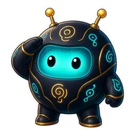

The Night Owls
Overview
How your server is doing and what to do next.

Setup checklist
The same checklist as /setup status: what is set up, what to fix next and the command that fixes it.
- Welcome channelSet
- Join roleSet
- Server logsNot set up ·
/setup logs - Void bait channelNot set up ·
/setup void
Usage and plan
- AI replies today
- 0 of 100
- Images and videos this month
- 0 of 15
- Premium
- Not active
- House wallet
- Placeholder